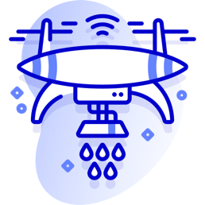

prototypes en cours en 2020 dont 20 en cours de réalisation en interne et 12 en collaboration avec des startups
13
nouvelles initiatives lancées en 2020
7
Initiatives scalées : Inspections des cales des navires, Smart lock, EasyWork…
5
potentiels de scale
1
potentiel nouveau business models (Drone@OCP)
+50
startups sourcées à travers la participation aux évènements digitaux de l’écosystème au Maroc et à l’international
2
Bootcamp IoT organisés (Youssoufia & Safi)
Conception du parcours “Digital For Leaders” et préparation de son lancement dans le cadre du déploiement du programme OCP Digital Academy en partenariat avec Africa Business School et le Learning Institute
6
Technologies testées à travers plusieurs prototypes
 Drones
IA
IoT
AR/VR
Veille technologique et digitale hebdomadaire
450
visiteurs/mois
Diffusion de deux études
• le digital à l’ère du Covid19 et
• Tendances technologiques 2021
Lancement de la situation « Digital Connectors » en novembre 2020 avec 47 collaborateurs onboardés comme relais de la transformation digitale pour porter le changement au plus proche du terrain
12
startups accompagnées
• 6 startups gagnantes et
• Des 2 challenges d’open innovation : Mining Challenge et Data challenge lancés en 2019


 Retour à l'acceuil
Retour à l'acceuil